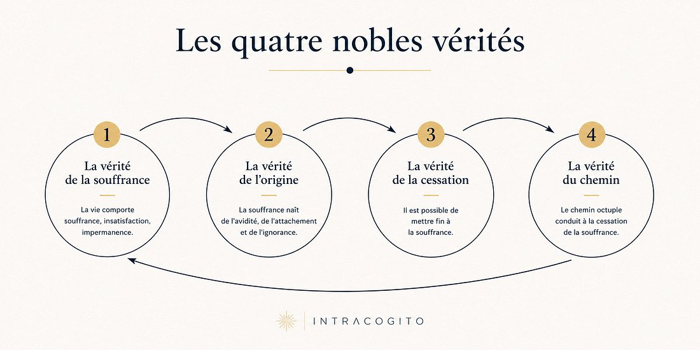
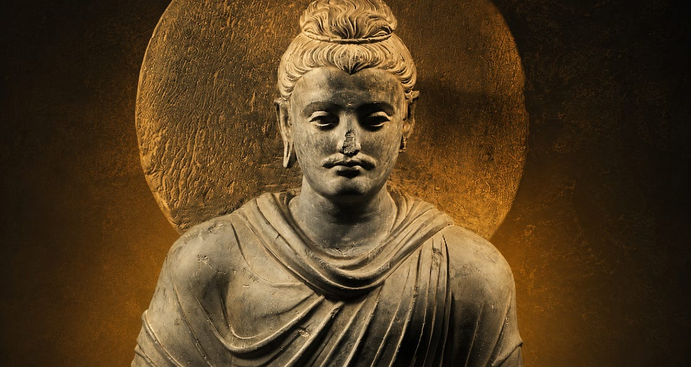
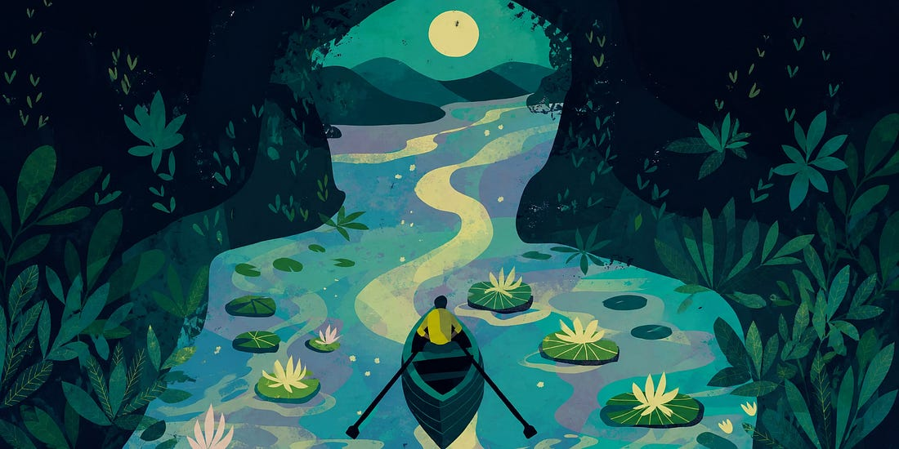

Introduction
Il y a des idées qui ne s’imposent pas d’un coup. Elles reviennent, sous des formes différentes, à des moments différents.
La première fois que j’ai été confronté au bouddhisme, c’était à travers des échanges avec mon père, dans une période marquée par une épreuve personnelle. Ce qui m’a frappé, ce n’était pas la doctrine : c’était la manière dont cette philosophie semblait offrir une façon différente d’habiter la souffrance. Presque apaisée.
Quelques années plus tard, en Thaïlande, j’ai passé une soirée avec un moine bouddhiste à qui j’ai pu poser toutes mes questions. Ce n’était plus une idée abstraite, mais une manière de vivre incarnée, choisie, cohérente.
Enfin, au Népal, j’ai vécu un mois dans une famille bouddhiste. L’enseignement que j’ai tiré n’était pas dans un discours ou une théorie mais dans des moments de vie.
À chaque fois, le même constat : cette philosophie semblait fonctionner pour ceux qui la vivaient .
C’est cette observation qui est au cœur de cet essai. Le bouddhisme s’organise autour de quatre nobles vérités. Les trois premières sont un diagnostic : la souffrance existe, elle a une origine, elle peut cesser. La quatrième est différente. On l’appelle “la vérité du chemin”. Et c’est cette vérité qui, à titre personnel, m’a le plus marqué et que je souhaite mettre en avant aujourd’hui.
Les quatre nobles vérités : un diagnostic
Le bouddhisme pose d’abord un constat que peu de traditions osent formuler aussi directement.
La première noble vérité, dukkha, affirme que l’existence est structurellement marquée par une forme d’insatisfaction. Non pas une souffrance intense au sens dramatique, mais un inconfort diffus, inhérent au fait que rien ne dure.
La deuxième en identifie l’origine : le désir et l’attachement, tanhā . Nous cherchons à fixer ce qui est, par nature, instable : des situations, des relations, des identités.
La troisième affirme qu’une sortie est possible. L’insatisfaction n’est pas une fatalité.
Et la quatrième propose un chemin, le Noble Sentier Octuple qui est fait de huit dimensions : vision juste, intention juste, parole juste, action juste, moyen d’existence juste, effort juste, pleine conscience, concentration.
Cette quatrième vérité est d’une nature différente. Elle ne décrit pas le monde. Elle propose une manière de le traverser. Et elle exige quelque chose que les trois premières n’exigent pas : qu’on la parcoure soi-même.

Bouddha n’est pas un modèle : il est une preuve
C’est en Thaïlande que j’ai compris quelque chose qui m’a profondément marqué.
En discutant avec un moine durant une soirée où l’on était coincé dans une auberge suite à un épisode de pluie importante, j’ai pu lui ai posé toutes les questions possibles.
J’avais en particulier envie de comprendre pourquoi on m’a toujours dit que le bouddhisme était une philosophie et pas une religion mais, qu’en deux jours ici, j’ai visité énormément de temples ou tout le monde “priait” Bouddha.
Sa réponse a été simple. Il m’a expliqué que ceux qui prient ne sont pas dans une posture de demande. Ils ne cherchent pas à fléchir une volonté divine ou à modifier le cours des événements. Ils demandent la force à un être éclairé qui a lui-même parcouru son chemin, d’avoir la lucidité de trouver le leur.
Cette distinction m’a beaucoup frappé. Et elle rejoint une conviction que j’ai développée dans mon essai Cogito #001 : La quête de notre destinée . Notre chemin nous est propre. Il ne peut pas être délégué, ni imité, ni copié.

Le danger de la voie par défaut
Cet enseignement a particulièrement résonné avec moi. Dans le cadre de mes études, une voie “par défaut” est clairement tracée pour tous les élèves. Tout pousse vers elle : les classements, les recruteurs, les alumni, la culture ambiante. Si on ne se pose pas activement la question “ est-ce que ce chemin me correspond vraiment ? ”, tout est structuré pour qu’on ne se la pose jamais. Cette pression sociale et ce conformisme sont puissants précisément parce qu’ils ne sont pas explicites. C’est le propre de la manipulation qui repose sur une “illusion de liberté” : personne ne t’obligera jamais à faire tel ou tel choix de carrière.
La prière bouddhiste, dans ce sens, est une pratique de lucidité. Permets-moi de comprendre ce à quoi j’aspire vraiment. Et non : donne-moi ce que je veux. Plutôt : donne-moi la clarté de savoir ce que je dois chercher.
Le Bouddha n’est pas un modèle à imiter. Il est la preuve qu’un chemin est possible. Et que ce chemin, chacun doit l’emprunter lui-même.
Siddhartha : la sagesse comme expérience
C’est dans Siddhartha de Hermann Hesse que cette idée prend peut-être sa forme la plus belle.
Le personnage ne trouve justement pas la sagesse en suivant Bouddhac. Il l’entend, il reconnaît sa grandeur, et il part dans la direction opposée. Il traverse l’excès, le plaisir, la richesse, puis l’ascèse la plus radicale. Avant, finalement, de trouver.
Une citation résume ce parcours :
Comme il est bon d’avoir appris à ses dépens ce que l’on doit savoir.
Herman Hesse, Siddhartha
Ce n’est pas de la résignation. C’est une reconnaissance : certaines choses ne peuvent pas être enseignées. Elles doivent être vécues.

La tradition zen illustre cela différemment.
Un élève demande à un maître combien de temps il lui faudra pour atteindre la maîtrise. Le maître répond : “Dix ans.” L’élève insiste : “Et si je travaille deux fois plus ?” Le maître répond : “Alors vingt ans.”
La sagesse ne se force pas. Elle se construit. Dans le temps, dans l’expérience, dans ce qu’on accepte de traverser.
Le mouvement comme nature profonde
La vérité du chemin repose sur une transformation personnelle. Mais pour accepter de se transformer, il faut d’abord accepter deux choses que le bouddhisme pose comme fondamentales : anattā (non-soi) et anicca (impermanence).
Anattā affirme que ce que nous appelons “moi” n’est pas une entité stable. C’est un agrégat de sensations, de pensées, d’émotions en mouvement constant. Si on croit avoir une identité figée, marcher sur un chemin de transformation devient une menace. Anattā retourne cette logique : tu es déjà un processus en mouvement. Et anicca complète l’idée : rien ne dure. S’accrocher à ce qui change inévitablement, c’est précisément la source de la souffrance décrite par les trois premières vérités.
Cette idée a une résonance scientifique intéressante. Les neurosciences confirment qu’il n’existe pas de “soi central” dans le cerveau : le soi est une construction, un récit que le cerveau se raconte. Et les recherches sur la contagion émotionnelle montrent que nos états internes ne sont pas produits de manière isolée : ils sont en interaction constante avec ce qui nous entourent. Ce que le bouddhisme intuitionne depuis des siècles, la science commence à en décrire les mécanismes.
Concrètement, cela m’a conduit à accorder beaucoup plus d’importance à ce que je laisse entrer dans ma vie : les lieux où l’on passe du temps, les relations, les mots et l’énergie transmise dans nos discours. Si nous ne sommes pas imperméables, alors ce qui nous entoure participe de ce que nous devenons.
Le piège du détachement
Frédéric Lenoir, dans Petit traité de vie intérieure, met en avant une limite à cette philosophie que je trouve juste : le non-attachement, poussé jusqu’à son terme logique, peut conduire à une forme de retrait du monde. Bouddha recommande le non-attachement à tous les êtres vivants, y compris ceux qui nous sont les plus proches.
Lenoir, ayant passé beaucoup de temps dans l’Himalaya, a observé des moines ayant médité parfois vingt ou trente ans, mais qui ont pleuré à la mort de leur maître spirituel. Ils s’étaient profondément attachés à lui. Et il en tire une observation que je partage : l’être humain, pour s’épanouir pleinement, tisse naturellement des liens affectifs forts. L’amour et l’amitié, donnés et reçus, ne sont pas une faiblesse. Ils sont une condition de la vie intérieure.
Je comprends la logique du détachement pour les biens matériels mais je ne souhaite pas l’appliquer de manière absolue. S’attacher, c’est prendre un risque. C’est aussi la condition pour vivre des relations intenses.
Et c’est peut-être là l’enseignement le plus précieux : cette philosophie ne propose pas un modèle unique. Elle propose un chemin. À chacun de décider jusqu’où il va.
Conclusion
Le bouddhisme ne m’a pas apporté des réponses définitives.
Il m’a offert quelque chose de plus utile : des cadres. Pour penser l’impermanence sans en être paralysé. Pour distinguer un désir qui construit d’un attachement qui fige. Pour comprendre que la sagesse n’est pas une destination, mais une manière de marcher.
À bientôt pour de nouvelles réflexions
Elouan
PS : En creusant le sujet, je suis tombé sur une vidéo assez intrigante sur les cas de réincarnation documentées. Je vous mets le lien si ça vous intéresse.
RÉINCARNATION : Ces Enfants se souviennent de leur Vie Précédente !